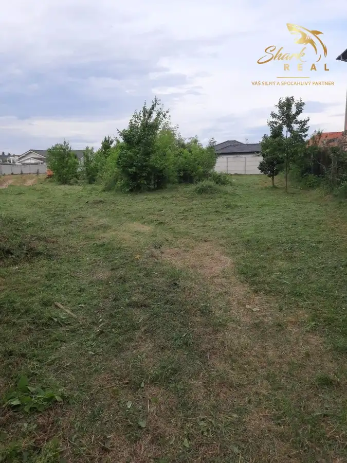
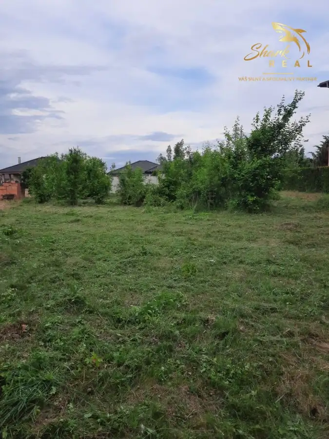

Stavebný pozemok vo Veľkom Cetíne
Veľký Cetín



- Plocha1029 m²
- VlastníctvoOsobné
O nehnuteľnosti
Shark real Vám ponúka na predaj pozemok v obci Veľký Cetín vhodný na stavbu rodinného domu.Obec Veľký Cetín sa nachádza 15 km juhovýchodne od Nitry na východnom brehu rieky Cetínky. Obec disponuje krásnou panorámou a aj občianskou vybavenosťou. Je veľmi vhodná pre mladé rodiny.Jedná sa o parcelu so stavebným povolením. Rozmer pozemku je 1029 m2 v blízkosti rodinných domov a bytového komplexu. Jedná sa o slnečný a rovinatý pozemok, veľmi vhodný na stavbu rodinného domu. Všetky inžinierske siete – plyn, voda, kanalizácia a elektrika (skrine a šachty pripravené na výstavbu).V prípade záujmu je možnosť odkúpenia aj projektovej dokumentácie k navrhnutému rodinnému domu.Cena 67 500 €Možnosť kúpy tejto nehnuteľnosti je aj prostredníctvom HÚ s výhodným financovaním a to priamo v našej realitnej kancelárií.Ceny uvedené v ponuke sú konečné a bez akýchkoľvek ďalších poplatkov.V cene nehnuteľnosti je zahrnuté:- kompletný právny servis spojený s predajom nehnuteľnosti- vyhotovenie rezervačnej, kúpnej zmluvy a návrhu na vklad do katastra nehnuteľností.- uhradenie správneho poplatku za návrh na vklad kúpnej zmluvy do katastra nehnuteľností- uhradenie poplatku za osvedčenie podpisov na kúpnej zmluve- poradenstvo / vybavenie financovania / pomoc pri znaleckom posudkuBližšie informácie, prípadne termín obhliadky Vám rada poskytnem na tel. č. 0915 084 737 alebo prostredníctvom emailu strapakova@sharkreal.sk
Parametre
- Druh
- Pozemok pre rodinné domy
- Dátum zverejnenia
- 31. 05. 2023
- Elektrina
- Na pozemku - 230 V
- Odpadové vody
- Na pozemku - Kanalizácia
- Plocha pozemku
- 1029 m²
- Plyn
- Na pozemku
- Pripravenosť k výstavbe
- Predbežný súhlas
- Terén pozemku
- Rovinatý
- Typ
- Predaj
- Vlastníctvo
- Osobné
- Voda
- Na pozemku - Diaľkový vodovod